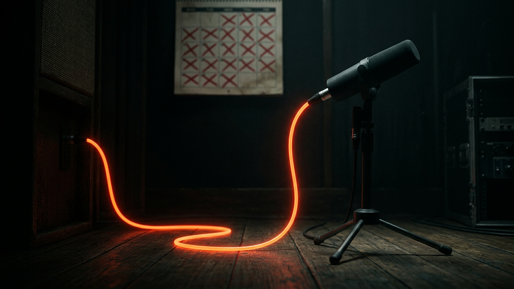

Alright, let's cut the crap. You're thinking about starting a podcast and you're obsessing over which microphone to buy. You've watched a dozen YouTube videos comparing the Shure SM7B to the Rode Procaster and you're stuck in analysis paralysis. I'm here to tell you, as someone who has spent 15 years managing mission-critical IT systems where downtime costs millions, you are focusing on the dumbest part of the equation. The gear is a rounding error. It's a trap designed to make you feel productive while you avoid the actual work.
The real cost of a podcast isn't in hardware; it's in the system you build around it. It's in the workflow, the security of your assets, the recurring software bills, and the brutal, non-negotiable cost of your own time. I'm going to walk you through this like I'm deploying a new server: we'll identify the real costs, measure the potential returns, and calculate the actual break-even point. Forget the influencer hype. This is the ground truth about what it really takes to get a positive ROI from this medium.
Everyone starts by looking at the sticker price of a microphone. It's the tangible, exciting part. But in the world of IT, we never just look at the purchase price. We calculate the Total Cost of Ownership (TCO), which includes every single cost associated with that asset over its lifespan. Your podcast gear is no different. The mic is just the entry fee; the real costs are hidden in plain sight. Let's break down the common tiers, and then I'll show you where the TCO bites you.
First, the gear itself. You can get started for peanuts. The "Good Enough" Tier is an Audio-Technica ATR2100x-USB or a Samson Q2U for about $80. It's a USB/XLR combo mic, which gives you an upgrade path. Add a cheap boom arm and a pop filter, and you're in for under $150. The "Prosumer" Tier is where most people aim: a Rode Procaster or Shure MV7X mic, a Focusrite Scarlett 2i2 audio interface, an XLR cable, and a good pair of headphones like the Sony MDR-7506. This will run you about $600-$900. Then there's the "You'd Better Be Making Money" Tier, with a Shure SM7B ($400), a Cloudlifter preamp ($150), and a high-end interface or a Rodecaster Pro II mixer ($700). You're easily looking at $1,500 to $3,000 before you've even recorded a single word.
Now, here's the TCO that nobody talks about. That fancy new XLR mic in the prosumer tier? It won't work without the $150 audio interface. That quiet SM7B? It needs a $150 preamp just to get a decent signal level. This is the "upgrade cascade." One new piece of gear often requires two others to support it. Then there's the software. Your Digital Audio Workstation (DAW) might be a one-time fee like Hindenburg ($100) or a subscription like Adobe Audition ($21/month). Add in transcription services like Descript or Otter.ai ($15-$30/month) and scheduling tools like Calendly ($12/month) for guests. Suddenly you have a recurring monthly bill just to support the hardware you bought.
Finally, consider the hidden infrastructure. Your raw audio files are huge and irreplaceable. Where are you storing them? A single external hard drive is a single point of failure. A proper backup strategy involves local and offsite storage. A good Network Attached Storage (NAS) device for local backups costs $400+, and cloud backup services like Backblaze B2 add another monthly fee. This is the TCO: the initial purchase plus all the supporting software, hardware, and services required to make it functional and resilient over time. The $400 mic actually costs you closer to $1,000 in the first year once you account for its operational ecosystem.
💡 Expert IT Tip: Implement the 3-2-1 Backup Rule from day one. It's a non-negotiable industry standard for data protection. Keep 3 copies of your raw audio files on 2 different types of media (e.g., your computer's internal drive AND an external NAS drive), with at least 1 copy stored off-site (in the cloud). A Synology DS223j NAS paired with their C2 Cloud Storage or a Backblaze B2 account is a rock-solid, set-it-and-forget-it system that will save your ass when—not if—a hard drive fails.If you think a $1,000 gear setup is expensive, you're not thinking like a sysadmin. The most expensive resource in any technical project is always human-hours. Your time has a dollar value, and podcasting consumes an obscene amount of it. This is the single biggest cost and the primary reason most podcasts fail. They don't run out of money; they run out of time and energy. Let's quantify this so it's painfully clear.
A so-called "one-hour" podcast episode is a lie. Here is a brutally realistic time breakdown for a single, well-produced interview episode:
Being conservative, you're looking at a minimum of 8.5 hours per episode. A more realistic average for a quality show is 12-15 hours. Now, let's attach a value to your time. Even if you pay yourself a very modest junior freelance rate of $50/hour, a 12-hour episode costs you $600 in labor. If you publish weekly, that's a $2,400/month operational cost in your time alone. Suddenly, that $400 microphone seems completely insignificant, doesn't it? Your time commitment for just two episodes has more value than your entire prosumer audio setup.
This is the number one metric for ROI. You have to "pay back" this massive time investment before you can even begin to talk about profit. The only way to manage this is to think like a systems administrator: optimize and automate. Create rigid templates for show notes. Build a repeatable checklist for your editing process. Use AI-powered tools like Descript to edit audio by editing the text transcript, which can slash your editing time in half. Batch-record four episodes in one weekend to get ahead. Your goal is to drive down the "time-cost-per-episode" relentlessly. If you can get the process down from 12 hours to 6, you've just doubled your ROI without gaining a single new listener.
Once you've created your audio file, you can't just throw it on your website's server and call it a day. That's like parking a cargo ship in your driveway. You need a specialized service—a podcast host—and this is a non-negotiable, recurring cost you must factor into your ROI calculation. Thinking you can save a few bucks by self-hosting is a classic rookie mistake that will lead to catastrophic failure. A dedicated host is a core piece of your infrastructure, not a luxury.
So, what does a podcast host actually do? It's not just a place to store MP3 files. A host like Libsyn, Buzzsprout, or Transistor.fm is a highly optimized media delivery platform. They provide a globally distributed Content Delivery Network (CDN), meaning your audio is cached on servers all over the world. When someone in Tokyo downloads your episode, they pull it from a local server, not from a single server in Ohio. This guarantees fast, reliable downloads for everyone. More importantly, the host generates and maintains your RSS feed. This feed is the central nervous system of your podcast; it's the menu that you submit to Apple Podcasts, Spotify, and Google Podcasts, telling them where to find your new episodes, show notes, and artwork. A broken RSS feed means your podcast is offline.
Secure your digital wealth with the world's most trusted hardware wallets.
GET YOUR WALLET NOWFrom a security and stability perspective, separating your podcast media from your main website is critical. This is a core IT principle: don't put all your services in one basket. If your website gets hit with a massive traffic spike or a Distributed Denial-of-Service (DDoS) attack, you don't want it to take your entire podcast offline. Your dedicated host has the bandwidth and infrastructure to handle millions of downloads without breaking a sweat. Your shared web hosting plan for your WordPress site absolutely does not. The cost for this service typically ranges from $12 to $50 per month, depending on the volume of audio you upload. It's an operational expense, like electricity. You just pay it.
Furthermore, control over your RSS feed is paramount. Some "free" hosting platforms are tempting, but the business model can be predatory. They might insert their own ads or make it incredibly difficult for you to leave, effectively holding your subscriber base hostage. A reputable paid host gives you total control. If you decide to switch hosts in the future, you can implement a "301 redirect" on your feed, seamlessly moving all your subscribers to the new host without them ever knowing anything changed. This ensures your podcast is an asset that *you* own and control, not one you're renting from a platform.
💡 Expert IT Tip: Never trust that your podcast feed is working. Verify it. Set up free monitoring with a service like UptimeRobot. You can configure it to check your RSS feed URL every five minutes. The moment the feed becomes unreachable or throws an error, it will send you an email or push alert. I've seen podcasters go a full week without realizing their host had an issue and their show was failing to update on Apple and Spotify. Proactive monitoring costs nothing and prevents silent, audience-killing outages.Let's be brutally honest about the "R" in ROI. You are not going to make money from programmatic ads for a very, very long time. The industry standard for CPM (Cost Per Mille, or cost per thousand listeners) is around $18-$25 for a pre-roll or mid-roll ad. This means to make just $25, you need a thousand people to download that episode. To make a meager $1,000 per month from ads, you'd need around 40,000-50,000 downloads per month across all your episodes. The vast majority of podcasts never get anywhere near that number. Chasing ad revenue when you're starting out is a losing game that will burn you out.
The real return is indirect and far more valuable. You must shift your mindset from "monetization" to "asset creation." Your podcast is not the product; it is a marketing engine for your actual product or service. The primary returns are:
This is where we put it all together. To truly understand your ROI, you need to stop guessing and start calculating. We're going to create a simple but powerful formula to determine your break-even point. This will force you to be honest about your costs and crystal clear about your goals. It transforms the podcast from a vague "content marketing" activity into a measurable business function with a P&L statement.
Step 1: Calculate Your Total Monthly Cost (TMC). This is the sum of your amortized gear costs, your recurring software/hosting fees, and the value of your time. Be brutally honest here.
Step 2: Define and Value Your "Return Unit" (RU). Since we're not relying on ad revenue, we need to define what a successful "conversion" from the podcast looks like. This is your Return Unit. It could be one new coaching client, one sale of your online course, or one paid speaking gig. You must then assign a conservative dollar value to that unit. For example, let's say the average lifetime value (LTV) of a new consulting client you get is $4,000. So, your Value per RU = $4,000.
Step 3: Calculate Your Monthly Break-Even Point. The formula is simple: Break-Even = TMC / Value per RU. Using our example numbers: $3,682.50 / $4,000 = 0.92. This means you need to acquire approximately one new client per month that you can directly attribute to the podcast just to break even on your total investment of time and money. This is your target. It's no longer a vague goal like "get more listeners." It's a concrete business objective: "Generate one qualified client lead from the podcast each month." This clarity is everything. It tells you whether the project is succeeding or failing in real business terms and allows you to make informed decisions about whether to continue, pivot, or stop.
So, is podcasting worth it? It can be, but only if you walk into it with your eyes wide open. The obsession with microphones and gear is a distraction from the real challenges: the staggering commitment of time, the discipline of a consistent workflow, and the need for a clear strategy to convert authority into tangible business outcomes. The hardware cost is a one-time dip in your bank account; the time cost is a massive, recurring withdrawal from your life.
My final advice is to treat it like a proper IT project. Start with a Minimum Viable Product (MVP). Buy a $80 USB microphone, download the free Audacity software, and commit to producing 12 weekly episodes. That's it. Don't spend a dollar more. This initial three-month sprint isn't about building a huge audience; it's about testing your own resolve. Can you stick to the schedule? Can you build a workflow that doesn't make you want to quit? Do you even enjoy it?
If you can pass that test, then and only then should you consider investing more. Because the ultimate ROI of a podcast isn't measured in downloads or ad dollars. It's measured in the authority you build, the doors you open, and the high-quality leads you generate for your core business. It’s a long-term asset that, if built correctly, can become the most powerful marketing and networking tool you’ve ever had. Just don't for a second think the magic is in the microphone.
Don't wait for the headlines. Our Private Telegram Channel delivers real-time AI security updates and digital wealth strategies before they go viral. Stay protected. Stay ahead.
⚡ JOIN THE 1% NOWNo sign-up required. Instantly check risks, analyze AI text, or calculate your digital finances.